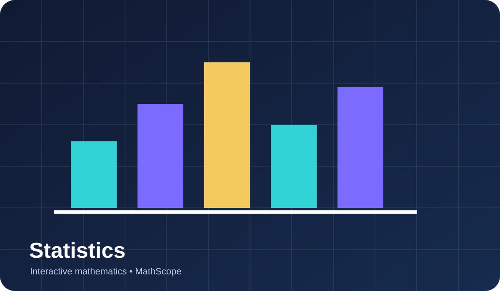

Foundations
Descriptive Statistics
A mean redistributes the total equally among all observations. Median instead identifies the central ordered position, making it less sensitive to ext…
Start lesson →Learn through connected representations, mathematical reasoning and carefully sequenced examples.
View lessons
Work through the lessons in any order. Completed lessons are saved locally on your device.
A mean redistributes the total equally among all observations. Median instead identifies the central ordered position, making it less sensitive to ext…
Start lesson →For equally likely outcomes, probability is the fraction of the sample space belonging to an event. Probabilities range from 0 (impossible) to 1 (cert…
Start lesson →